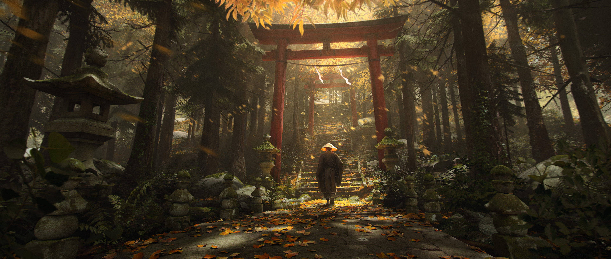

GAME FILE / 004
Ghost of Tsushima
A war-torn island. A code under pressure. Calm beauty interrupted by sharp steel.
01 / THE WORLD
Follow the wind, not a minimap.
Fields of tall grass, red maple forests, and quiet shrines guide your eyes naturally. The island looks peaceful even while invasion hangs over it.
02 / THE EXPERIENCE
Honor or survival — both feel sharp.
Every encounter lets you decide how to approach: face enemies head-on in a standoff, or break the code and strike from the shadows.
Duel
Read enemy stances, time your parries, and end fights with clean, deliberate strikes.
Infiltrate
Use rooftops, smoke, and distractions to thin out camps before anyone sees you.
Wander
Pause between battles to follow foxes, write haiku, or free occupied villages.
03 / YOUR FIT
Is this your kind of world?
You may enjoy it if...
- You care about visual atmosphere and clean presentation.
- You like precise sword combat built around timing.
- You enjoy choosing between open combat and stealth.
Think twice if...
- Standard open-world camp clearing wears you out.
- You want branching RPG dialogue choices.
- You prefer fast, chaotic brawls over deliberate timing.